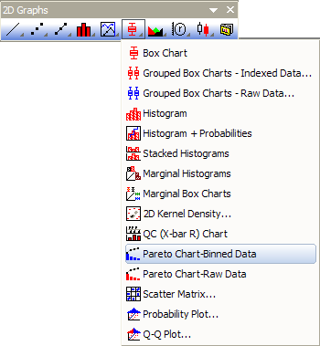

Pareto-Diagramm - Eingeteilte Daten
ParetoChart-BinData

Datenanforderungen
Wählen Sie eine Spalte (oder Datenbereich) als Datenbereich aus und eine andere Spalte (oder Datenbereich) als Anzahl.
Diagramm erstellen
Wählen Sie die gewünschten Daten aus.
Wählen Sie im Menü .
oder
Klicken Sie auf die Schaltfläche Pareto-Diagramm - Eingeteilte Daten auf der Symbolleiste 2D Grafiken.

Vorlage
PARETOBIN.OTP (im Origin-Programmordner installiert)
Notizen
- Sie können eine Gruppierungsspalte auswählen, um die Eingabedaten in Gruppen zu unterteilen und sie als Pareto-Diagramme in verschiedene Felder oder Diagramme zu zeichnen.
- Sie können mit Hilfe des Kontrollkästchens Symbol rechts vom Balken zeigen entscheiden, ob das Symbol rechts vom Balken gezeigt wird. Wenn Sie es aktiviert haben, beginnt dieses Punkt-Liniendiagramm im Ursprung(0,0) und positioniert die Punkte rechts vom Balken. Der erste und der letzte Punkt haben keine Beschriftungen.
- Die rechte Y-Achsenskalierung ist immer 0~100. Es gibt eine horizontale Ankerlinie und eine vertikale Ankerlinie bei Y = 80.
Weitere Einzelheiten zum Erstellen und benutzerdefinierten Anpassen finden Sie auf der Seite des Pareto-Diagramms.